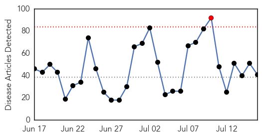
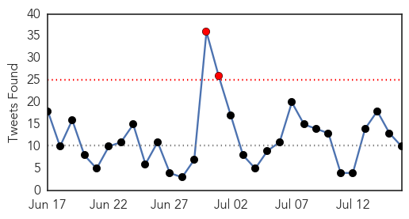
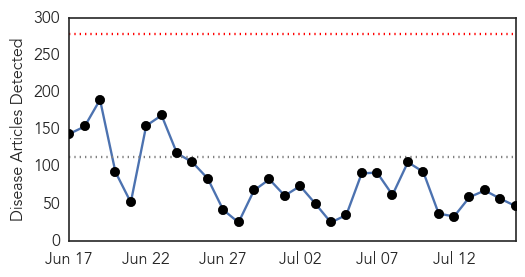
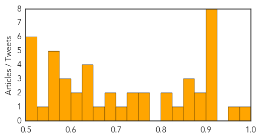

Ebola
30-Day Web Trend
1 alerts, 0 warnings

30-Day Twitter Trend
2 alerts, 0 warnings

Article Locations

Article Confidences

Top Articles:
- 1.000
- Ebola makes a comeback in Liberia
- 1.000
- Dr. Kateh stresses honesty in Ebola fight
- 1.000
- Re-emergence of Ebola in Liberia remains a mystery
- 1.000
- Ebola UPDATE: Deadly Virus Re-Emerges In Liberia; Sparks Fears Over Outbreak Resurgence : World : Chinatopix
- 1.000
- Re-emergence of Ebola in Liberia remains a mystery
- 1.000
- How can you plan for events that are unlikely, hard to predict and highly disruptive
- 1.000
- The impact of Ebola crisis on Sierra Leone’s health system
- 1.000
- Kenya to Seal Its Borders Amid Ebola Virus Disease Epidemic
- 0.999
- Liberia confirms 2nd Ebola death in resurgent outbreak
- 0.999
- Liberia confirms new Ebola case as outbreak spreads
- 0.999
- Africa’s Ebola outbreak has not run its course: UN envoy
- 0.999
- Liberia Confirms 2nd Ebola Death In Resurgent Outbreak
- 0.999
- One dead after Ebola reappears in Liberia
- 0.999
- Ebola claims second death in Liberia
- 0.999
- Ebola survivor likely source of new Liberian outbreak
- 0.998
- Politico SL News Ebola returns to Liberia
- 0.998
- Liberia confirms new Ebola case as outbreak spreads
- 0.997
- Liberia confirms 2nd Ebola death in resurgent outbreak
- 0.996
- Ebola activity steady, back in Guinea and Sierra Leone capitals
- 0.993
- Condition of Spanish nurse with Ebola worsens Thursday: officials
- 0.992
- Politico SL News Ebola has done nothing to us
- 0.990
- LIBERIA: Lutheran Church Donates Protective Gears to Hospitals
- 0.986
- Ebola: Lagos Alerts Residents, Articles
- 0.986
- Ebola burial teams seek bribes in Sierra Leone - health official
- 0.982
- Ebola burial teams in Sierra Leone extort money
- 0.978
- VP Boakai Off To Malibu for Ebola Conference
- 0.956
- Politico SL News The state of hospitals in Sierra Leone
- 0.952
- Investing in Community Health Workers Is Essential for Preventing the Next Ebola
- 0.950
- In Guinea, responding to Ebola by addressing rumors and resistance - Guinea
- 0.949
- Inhaled vaccine prevents Ebola in monkeys
- 0.946
- Ebola Burial Teams Seek Bribes In Sierra Leone
- 0.924
- Politico SL News Inside Sierra Leone’s Connaught Hospital
- 0.923
- Liberia's fight with ebola not over yet, cause of resurgence still a mystery
- 0.896
- EU Commission to pledge approximately €450m to support recovery of 3 countries
- 0.879
- East African news, Headlines, Business, Tourism, Sports, Health, Entertainment, Education
- 0.838
- DC conference hears how UN reticence to deal with faith groups slowed Ebola response
- 0.785
- MSF 2014 Report: International Community Still Idle in Certain Crises
- 0.764
- Broomfield firm Crystal Diagnostics steps into Ebola rapid test market
- 0.755
- UNMEER Sierra Leone Chief Gives Hope on Ebola
- 0.663
- Japanese doctor-turned-diplomat describes work fighting Ebola in Ghana
- 0.614
- The e-bola lesson: The first educational movie for healthcare professionals
Top Tweets:
- 0.985
- Liberia authorities track herbalist who escaped Ebola quarantine - Reuters Africa http://t.co/PT9xe07qLJ ebola EVD
- 0.985
- Ebola burial teams seek bribes in Sierra Leone: health official - Reuters http://t.co/DP6kMmCG5U ebola EVD
- 0.985
- Ebola burial teams seek bribes in Sierra Leone: health official - Reuters http://t.co/AsLmQcrYA1 ebola EVD
- 0.940
- Treating Ebola patients rewarding for local nurse - The Olympian http://t.co/jm6I4ZIVQ5 ebola EVD
- 0.917
- Ebola Update: 27,642 confirmed, probable & suspected cases reported in 3 most affected countries, with 11,261 deaths. EbolaResponse
- 0.864
- Narita flier arriving from Guinea tests negative for Ebola - The Japan Times http://t.co/NyBbSyPy6L ebola EVD
- 0.818
- Liberia Confirms 2nd Ebola Death in Resurgent Outbreak http://t.co/0TUC1WMn9Y
- 0.815
- Investing in Community Health Workers Is Essential for Preventing the Next Ebola - Huffington Post http://t.co/eICtSUavMN ebola EVD
- 0.808
- Ebola burial teams seek bribes in Sierra Leone: health official | Reuters - Reuters http://t.co/LvreifpaYL
- 0.799
- Emergent BioSolutions to develop Ebola drug - Maryland Daily Record (subscription) http://t.co/NUu79HHK0o ebola EVD
- 0.748
- Re-emergence of Ebola in Liberia remains a mystery - USA Today - USA TODAY http://t.co/dNGQdRkfBT ebola EVD
- 0.743
- RT: Burial teams have an esp. difficult job as part of the Ebola response. Read more: http://t.co/WecmowVbrq RoadtoZero htt…
- 0.692
- 'Called for Life': Ebola survivor shares ordeal — his, Africa's — in memoir ... - Dallas Morning News http://t.co/TVgpcKQRaQ ebola EVD
- 0.692
- 'Called for Life': Ebola survivor shares ordeal — his, Africa's — in memoir - Dallas Morning News http://t.co/iqAriuB6At ebola EVD
- 0.648
- Broomfield firm Crystal Diagnostics steps into Ebola rapid test market - The ... - The Denver Post http://t.co/CIPFdMOX9Q ebola EVD
- 0.636
- RT: Delivering essential items to quarantined families in Ebola-hit Sierra Leone to support them go through quarantine. http://t…
- 0.636
- Our deepest sympathies go out to. The Ebola outbreak is far from over http://t.co/zmEUakhMEh ZeroCases TackleEbola
- 0.629
- Two new trials of Ebola vaccines begin in Europe and Africa | Grand Forks Herald - Grand Forks Herald http://t.co/25KBQxen4K ebola EVD
- 0.622
- Japanese doctor-turned-diplomat describes work fighting Ebola in Ghana - The Japan Times http://t.co/qFn6KIRMH7 ebola EVD
- 0.540
- Parliament Adopts Ebola Funds Recommendations - http://t.co/NaiI6Jl8yj http://t.co/xOAkoXPzCw ebola EVD
- 0.526
- Burial teams have an esp. difficult job as part of the Ebola response. Read more: http://t.co/WecmowVbrq RoadtoZero http://t.co/2n44Ui7kzp
Unknown
30-Day Web Trend
0 alerts, 0 warnings

30-Day Twitter Trend
0 alerts, 0 warnings

Article Locations

Article Confidences
Top Articles:
- 0.983
- Q fever numbers 'not unusual'
- 0.966
- Chickenpox cases plunge in Ontario following public vaccine program: study
- 0.924
- Study finds huge drop in chickenpox cases after Ontario began public vaccine program
- 0.917
- Chicago Tribune
- 0.917
- Chicago Tribune
- 0.917
- Chicago Tribune
- 0.917
- Chicago Tribune
- 0.917
- Chicago Tribune
- 0.917
- Chicago Tribune
- 0.909
- No chemicals to fight bird flu - Farmers warn
- 0.898
- barfblog
- 0.876
- 162 die in the north as malaria hits hard
- 0.862
- East African news, Headlines, Business, Tourism, Sports, Health, Entertainment, Education
- 0.853
- Public Radio Tulsa
- 0.851
- Bird flu: Poultry farmers to be compensated- Hanna Bissew
- 0.829
- Stable patients leaving hospitals
- 0.801
- GBS bacterial infection 'unusual' for healthy adults, doctors say , news, Health News, AsiaOne YourHealth
- 0.801
- Hundreds of Chinese visit S. Korea as MERS scare dies down
- 0.760
- CDC: high-risk areas for Lyme disease growing
- 0.760
- Authorities warn of more Lyme disease in Montérégie - Montreal
- 0.741
- Alzheimer's May Affect African-Americans Differently Says Study : LIFE : Tech Times
- 0.730
- EU Authority Recommends Variety of ASF Control Measures
- 0.720
- SGGP English Edition- Four hospitals pledge to change medical workers' behaviors
- 0.698
- Defra seeks to minimise export damage from bird flu outbreak
- 0.692
- Madison County Confirming Case of Eastern Equine Encephalitis, or 'Triple E'
- 0.664
- MRSA Epidemic Fueling Antibiotic Resistance
- 0.640
- In eastern Ukraine, water shortage puts babies and mothers at risk
- 0.637
- Buruli ulcer: Significant breakthrough in cure for flesh-eating disease [Graphic images]
- 0.635
- News, Weather and Sports for Lincoln, NE; KLKNTV.com
- 0.626
- Doctors Warn Venezuelan Child Medical Care in Critical Condition
- 0.621
- Les députés demandent un mécanisme contraignant et permanent pour répartir les demandeurs d'asile dans l'UE
- 0.620
- Smart shots bring Nigeria to brink of polio eradication
- 0.598
- A Reader Reports A TB Scare In El Paso, Which Is NOT Being Reported Nationwide
- 0.592
- People of Munster still concerned about impact of austerity and health cutbacks
- 0.590
- UNICEF appeals for help to restore damaged water facilities for 1.3 million people
- 0.572
- Korean meetings industry stays strong as MERS cases subside. ~ Thursday, 16th July 2015 from 4Hoteliers
- 0.570
- New Mexico is throbbing with Tularemia warning
- 0.568
- The Caledonian-Record
- 0.560
- Alzheimer’s May Affect the Brain Differently in African-Americans than European-Americans
- 0.554
- Get the facts on Q-Fever At Free Forum
- 0.546
- Green Island restaurant linked to norovirus outbreak: health official
- 0.521
- Holistic Treatment Arthritis Dogs Illinois Springfield
- 0.518
- Eastern Visayas deworming drive targets 75% of vulnerable population
- 0.516
- A better understanding of resistance sought
- 0.509
- Health workers to improve attitudes
- 0.502
- Study shows Otsuka's TB drug works even in worst cases
- 0.502
- Cigna : and Providence-Swedish Health Alliance ACO Partner to Improve Quality and Lower Medical Costs
Top Tweets:
- 0.640
- High risk of flu complications? See a doctor if you experience flu symptoms while traveling. http://t.co/7EIi3Iv3TQ FluTravelTips
- 0.571
- TBT: Jusqu’en juillet 2014, Zorbo était un assistant de laboratoire à Lambanyi, en Guinée. Zorbo a… https://t.co/pkplkTBTJx
- 0.510
- Going on a cruise? Viruses like flu can spread easily on cruises. Tips for flu-free cruising: http://t.co/TYsc1HQYOG FluTravelTips